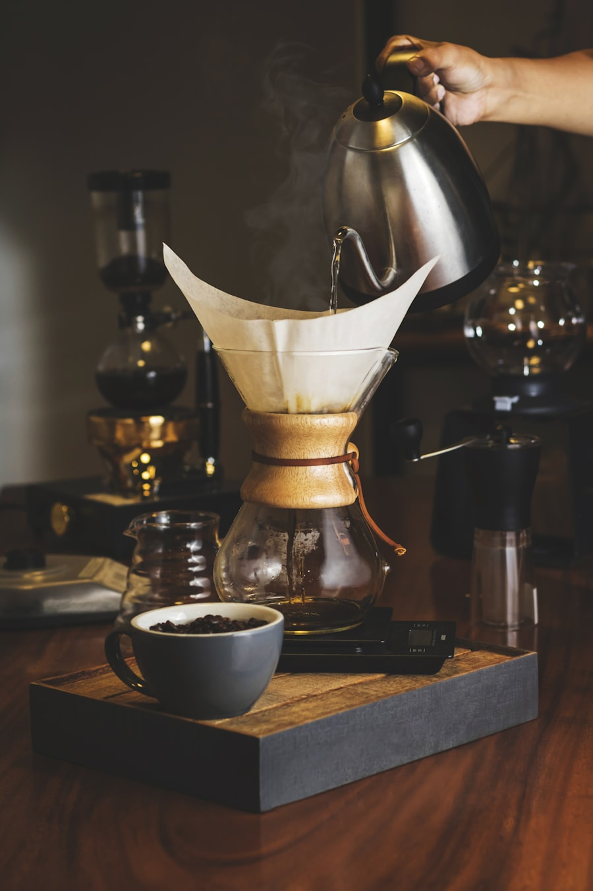

Reservations
Saturday at the kettle
Every Saturday at 10:00 and 12:00 we taste the week's batches: three coffees, three brew methods, forty-five minutes. It is free, and you sit next to the roaster.
Walk-ins are welcome while there are stools; a reservation guarantees one. Bring nothing but taste.
- Where
- Asterweg 20-D, Amsterdam-Noord
- When
- Saturdays, 10:00 and 12:00
- Shop hours
- wed–fri 9:00–17:00 · sat 9:00–15:00
- hello@ketelzwart.example

Forty-five minutes
What happens while you sit there
- 0:00You get a stool at the kettle and the week's roast log.
- 0:05Cup one, the lightest. Filter, no milk, no hurry.
- 0:20Cup two and three side by side: same water, two methods.
- 0:40Take home whichever one stayed with you. No obligation.
Ten stools, so a reservation is the difference between standing and sitting.